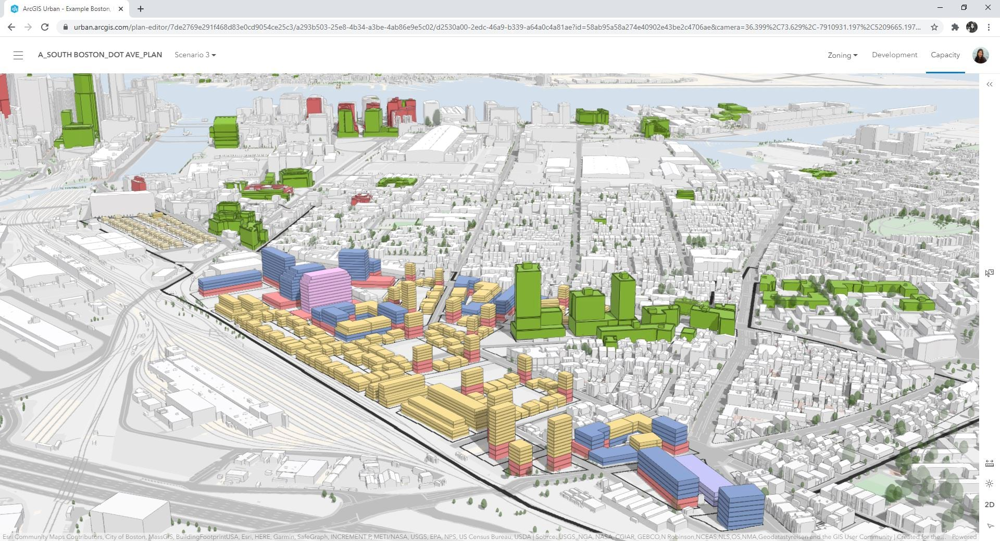

With the evolving times, land needs are evolving, too. The growing population has brought in a need for urbanization. Cities worldwide are exhausted and used over their capacities.
This involvement of technology is thus seen through the emergence of various tools and software that help make urban planning, mapping, and development more accurate and seamless than ever.
Another crucial tool for urban planners is Google Earth. Its key feature is that it is compatible with most urban mapping tools and software
p>One of the most widely used GIS tools by urban designers, ESRI ArcGIS, has gained traction as it allows planning stakeholders to execute conventional urban planning methods much more efficiently and accurately.